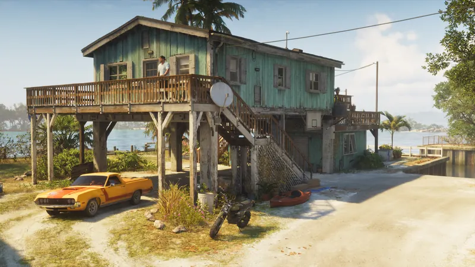

How to fix the railing and Jason's house in GTA 6
Short answer
There are four projects at Jason's Key Lento house: the steps, the roof, the railing and the bedroom wall. Do them before you pick up Lucia, because you can't finish them afterward. The railing is behind the house, by the outdoor gym.

Early in the story, Jason lives in a waterfront house in Key Lento that Brian Heder lends him. It's a fixer-upper, and you have limited time to fix it up before Lucia gets out and moves in, according to GameSpot. Finishing the projects makes Lucia happier and strengthens their relationship.
The four projects
- Steps: next to the stairs closest to the mailbox and driveway are some 2x4s; interact with them (Triangle / Y).
- Leaky roof: climb the yellow ladder on the front porch and interact with the shingles.
- Railing: the hardest to find. Go out the back door and down to the outdoor gym; facing the house, you'll see a gap in the railing next to a ladder. Interact with the gap.
- Wall: in the bedroom, the wall opposite the bed is half-built. Interact with the wood frame: Jason hangs drywall and paints it, and you pick the color.
Important: once you decide to go pick up Lucia, you can't come back to these projects.
Other tasks before Lucia arrives
GTABase and GameSpot list more optional Chapter 1 tasks: picking up groceries, buying flowers, buying Lucia a necklace, collecting her clothes from her friend Andy and getting a haircut. Push Square adds that Lucia reacts differently depending on whether the house was ready in time.
To be safe, save to another slot first: how to save. Full list in GTA 6 missions.
Sources
- GameSpot: How to fix all projects at Jason's house in GTA 6 (Nov 18, 2026)
- GTABase: Chapter 1 missions (Feng Shui and optional tasks)
- Push Square: Grand Theft Auto 6 review
Written by Six Stars from the sources above, checked on November 20, 2026. Spot a mistake? Tell us via About us.